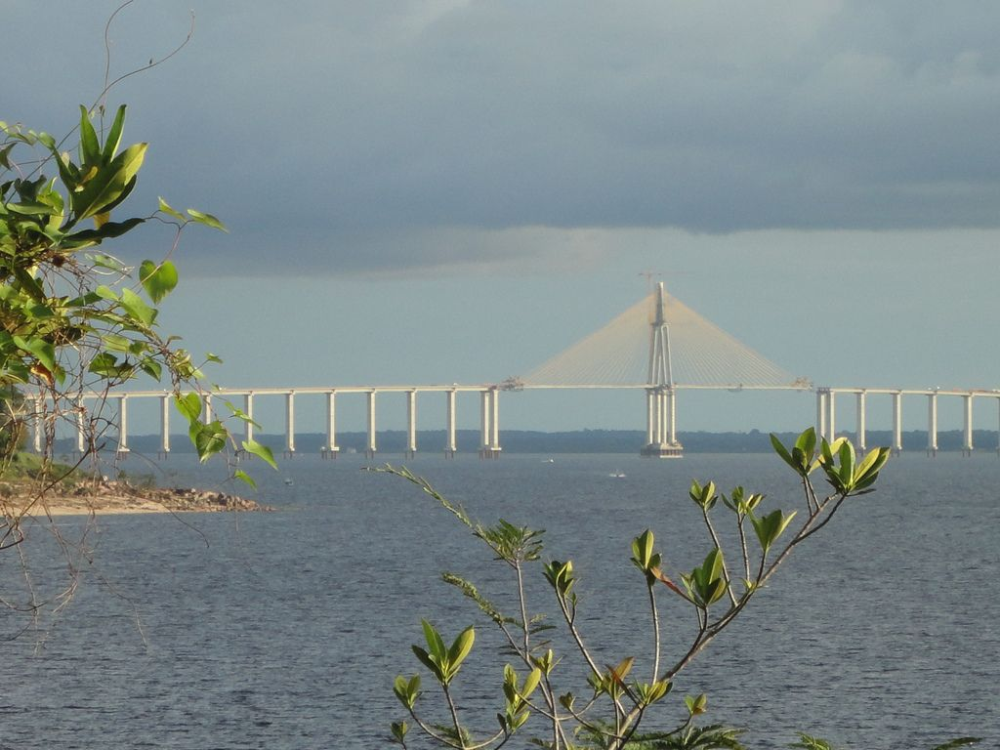
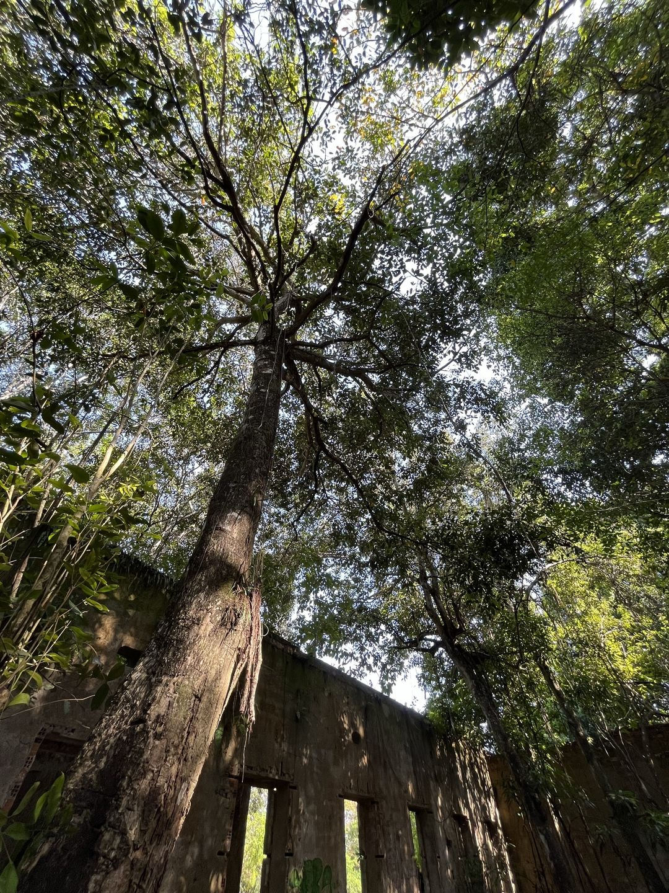
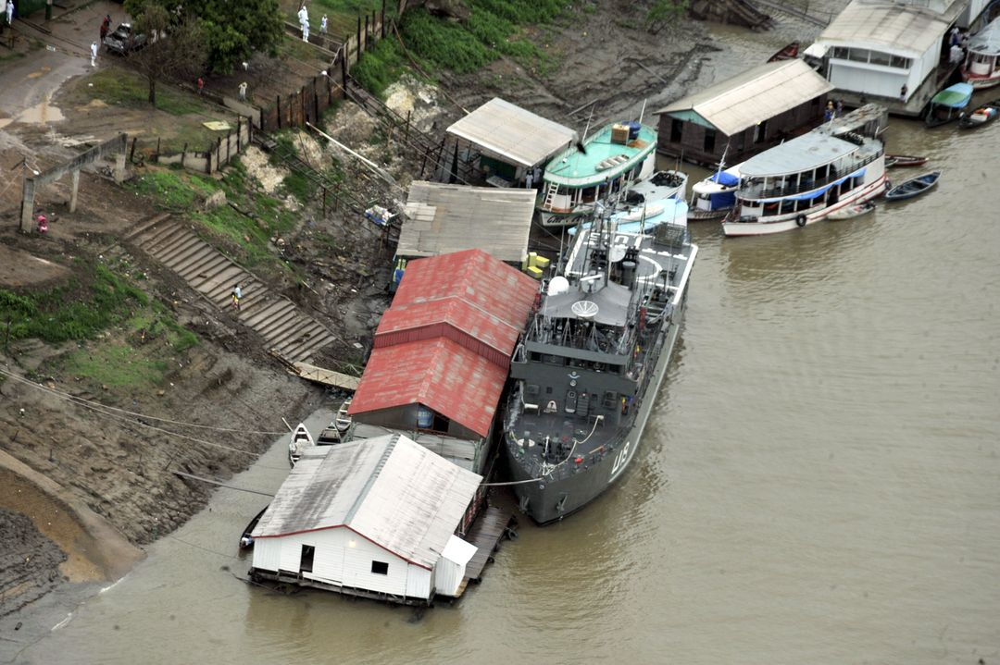

Censo Demográfico 2022 · Iranduba (AM) e Manaus
Quem vive em Iranduba?
pessoas
Um retrato da cidade na margem oposta do rio Negro em relação a Manaus — contado em perguntas simples, uma por seção.
- homens
- mulheres
- crescimento ao ano, 2010–2022
População e crescimento
Quanto a cidade cresceu?
ao ano entre 2010 e 2022
cerca de o ritmo de Manaus ( ao ano)

A população passou de pessoas em 1991 para em 2022, maior. Depois de 2010, o ritmo acelerou de novo: pessoas a mais em doze anos.
- homens ·
- mulheres ·
- crianças, 0 a 9 anos ·
- adolescentes, 10 a 19 anos ·
A ponte é hipótese, não causa. A cronologia é compatível, mas o Censo, sozinho, não separa o efeito da ponte de outros fatores, como terrenos mais baratos ou a dinâmica de Manaus.
Saiba mais: taxa geométrica de crescimento
É o ritmo médio anual que, repetido ano a ano de forma composta, leva a população de um censo ao seguinte. Por isso as taxas por período (9, 10 e 12 anos) são comparáveis entre si.
Sexo e pirâmide etária
Mais homens ou mulheres? Quantos jovens?
homens para cada 100 mulheres
em Manaus, — lá as mulheres são maioria
Na infância a razão é , normal ao nascer; o excedente de homens surge na vida adulta e chega a entre 60 e 74 anos. Iranduba é mais jovem: idade mediana de , contra em Manaus.
- Índice de envelhecimento
- Manaus
- Razão de dependência
- só Iranduba
- Distância entre as pirâmides
- dissimilaridade
Saiba mais: razão de sexos, mediana, envelhecimento e dissimilaridade
- Razão de sexos: homens para cada 100 mulheres. Acima de 100, há mais homens.
- Idade mediana: metade da população tem essa idade ou menos.
- Índice de envelhecimento: pessoas com 60 anos ou mais para cada 100 com até 14 anos.
- Razão de dependência: pessoas de 0 a 14 e de 65 anos ou mais para cada 100 de 15 a 64 anos.
- Dissimilaridade: parcela da população que teria de mudar de grupo de sexo e idade para as duas pirâmides ficarem iguais.
- Por que há mais homens adultos? A explicação mais plausível é a migração seletiva de homens, por exemplo para trabalho — uma hipótese, que exigiria dados de migração para ser testada.
Cor ou raça
Como as pessoas se identificam, e isso mudou?
se declaram pardas
em Manaus,

A composição mudou pouco desde 2010 (dissimilaridade de ), mas as contagens de pessoas pretas ( → ) e indígenas ( → ) cresceram mais que a população. Entre pessoas pretas há homens para cada 100 mulheres, a maior razão entre os grupos.
Grupo pequeno: amarela ( pessoas) e indígena (). Leia com cautela e não como achado.
Cor ou raça é autodeclarada: a comparação entre 2010 e 2022 mistura mudança na população com mudança na forma como as pessoas se identificam.
Urbano e rural
Onde as pessoas vivem?
vivem em área rural — quase uma em cada quatro pessoas
em Manaus,

Iranduba integra a região metropolitana, mas mantém parte relevante da população no campo. Moram em favelas e comunidades urbanas pessoas (), com alfabetização semelhante à do município ( × ).
foi calculado pelo autor (pessoas em favelas ÷ população); o arquivo do IBGE não traz esse percentual.
Deficiência e autismo
Quantas pessoas têm deficiência ou autismo?
das pessoas de 2 anos ou mais têm deficiência
de pessoas · Manaus · autismo (Manaus )
Entre as pessoas com deficiência, o analfabetismo é de , cerca de o das pessoas sem deficiência (). As diferenças por sexo são pequenas e, sem margem de erro, não se pode dizer que sejam relevantes.
Resultados amostrais e preliminares, sem margem de erro e sem padronização por idade. Amarela não é confiável: casos em pessoas. Onde aparece “sem registro”, o IBGE não registra casos — isso não prova ausência.
Saiba mais: como o Censo mede deficiência
Pela limitação funcional, não por diagnóstico: é pessoa com deficiência quem declarou muita dificuldade ou nenhuma capacidade de enxergar, ouvir, andar, pegar objetos, comunicar-se ou cuidar de si. As contagens por cor da tabela de autismo diferem das da tabela de população e não devem ser misturadas.
Casa e família
Como são as famílias?
moradores por domicílio, em média
em Manaus, · domicílios em Iranduba
São chefiados por mulheres dos domicílios; entre eles, são de mulher sem cônjuge com filhos ou enteados (entre os chefiados por homens, ). Casas chefiadas por mulheres têm mais moradores: contra .
A média de moradores por cor ou raça e por idade vem da amostra, sem margem de erro. Grupo amarelo: poucos domicílios, sem base para interpretação.
Saiba mais: “dentro de cada sexo”
Os percentuais da composição são calculados sobre os domicílios chefiados por homens e, separadamente, sobre os chefiados por mulheres. Por isso é a parcela entre os chefiados por mulheres; no total de domicílios, a mesma situação representa .
Síntese
O que os dados mostram — e o que não dizem
Um município jovem, em expansão rápida, mais rural que a capital, com famílias maiores e alfabetização mais baixa.
O que os dados não permitem afirmar
- Os grupos amarelo e indígena têm poucos habitantes; no autismo, a tabela não registra casos neles em Iranduba, e isso não prova ausência.
- Os grupos etários são de cinco anos, o que impede aplicar o corte legal de doze anos para crianças.
- Cor ou raça é autodeclarada: a comparação entre censos mistura mudança de composição com mudança de autoidentificação.
- O Censo é o retrato de um momento e não sustenta relações de causa; ponte e migração seletiva são hipóteses.
- Deficiência, autismo e média de moradores por cor e idade vêm da amostra, sem margens de erro, e as taxas por cor não são padronizadas por idade.
- As contagens por cor da tabela de autismo diferem das da tabela de população, sobretudo nos grupos pequenos.
Para ir além
- Comparar com outros municípios da Região Metropolitana de Manaus e com o estado do Amazonas.
- Padronizar por idade as taxas de alfabetização e de deficiência, com tabelas por idade e cor ou raça.
- Incluir medidas de incerteza nos resultados amostrais.
- Investigar migração, ocupação do território e acesso à escola.